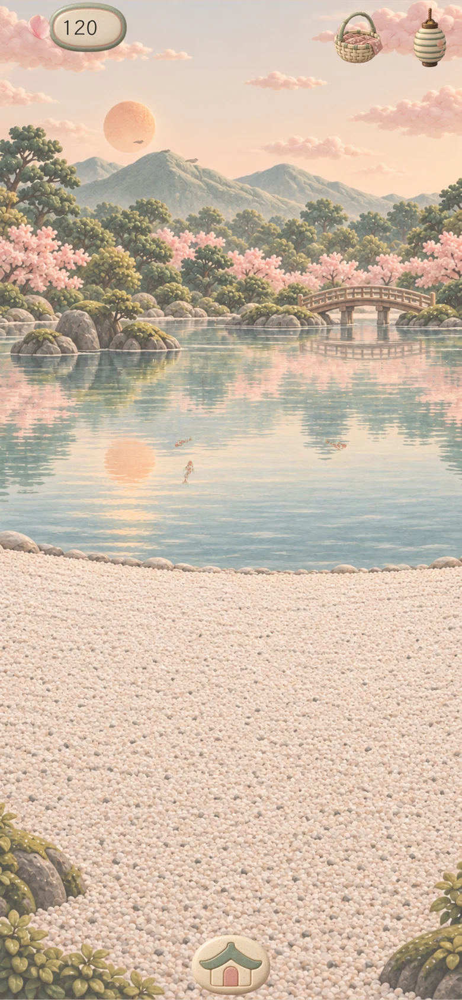

01 / 纸牌接龙
一张牌恰到好处的喜悦。
克朗代克、空当接龙、蜘蛛纸牌、育空……经典游戏，住进了新的花园。
日式小庭，片刻闲暇
摆几张纸牌，配几对牌，让时间慢下来。悠闲地玩一局，再和 Tomesi 一起布置属于你的宁静小天地。
无广告 · 随心慢玩 · 支持离线
一位小伙伴。
一座专属花园。

四处天地，随心布置
廊前的一盆植物，水边的一盏灯，苔藓上的一只猫。每件物品找到自己的位置，花园也渐渐有了生气。
锦鲤悠然游动。为池塘添些布置，还会迎来新的访客。
清晨、黄昏或月光：为你的休憩时光选一束光。

简简单单，享受游戏
从熟悉的纸牌接龙到日式小谜题，今天想玩什么，就选什么。每一次获胜，花园都会开出新的花。
克朗代克、空当接龙、蜘蛛纸牌、育空……经典游戏，住进了新的花园。

观察图案，移除配对的牌，让思绪慢慢安静下来。

圆相、赏月、鲤之道……小小谜题，带来不同乐趣。
四款游戏，永久免费。 克朗代克、麻将接龙、金字塔和圆相。
一次购买游戏合集，即可获得另外十二款游戏。无订阅，无广告。
轻点他，打个招呼吧。
熟悉的 Tomesi，新的栖身之所
你熟悉的那道小小绿色身影。在这里，Tomesi 穿上和服，坐在你身边，陪你走遍花园的每个角落。到了水上，他就坐上自己的小船。
用收集的花瓣，也为他挑选新衣服吧。
可互动的游戏角色动画预览。
探索 Tomesi 的世界安顿下来之前
Tomesi Garden 即将登陆 iPhone 和 iPad。上线后，我们会在这里添加下载链接。
没有。开始前没有，获胜后也没有。花园始终是一处安静的地方。
游戏和花园都可以离线使用，无需账号。下载应用、在 App Store 购买或恢复购买时需要联网。
玩游戏可以收集花瓣，再到花园商店中换取装饰、伙伴、服装和纸牌样式。
可以。将物品放到适合的位置：地面、水面或缘廊。“我的装饰”会标明可放置的区域。植物、茶具和小伙伴都能在屋前找到自己的位置。
可以，游戏提供减少动态效果模式。在本网站上，暂停按钮可以停止动画；网站也会遵循设备的相关设置。
为你留一个位置
即将登陆 iPhone 和 iPad。
有疑问？给我们写信